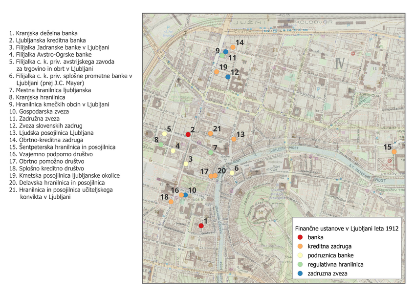
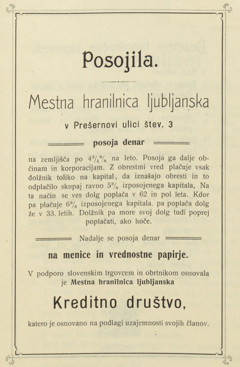
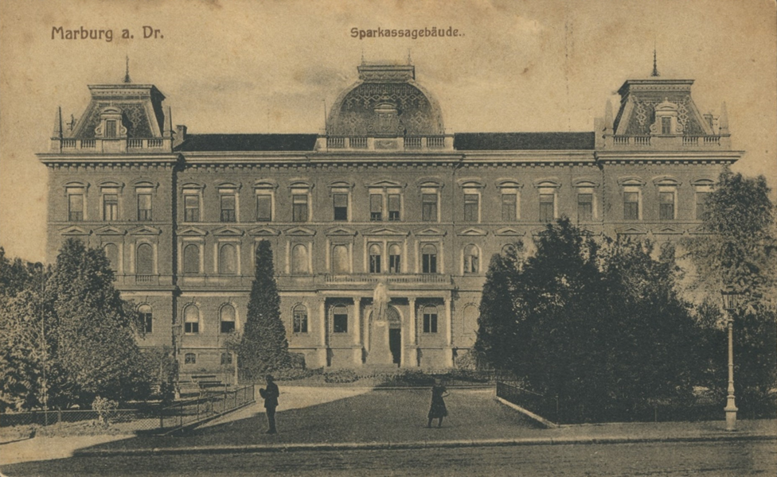
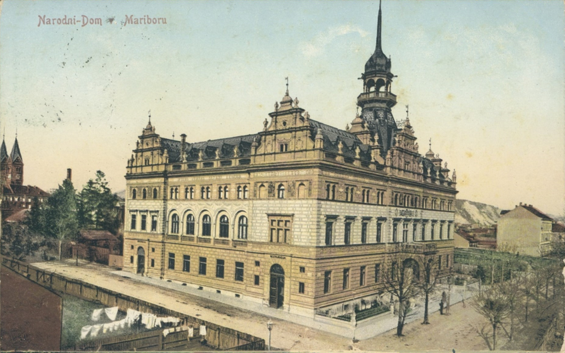
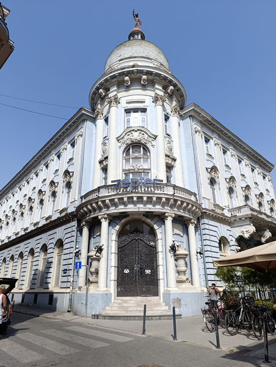
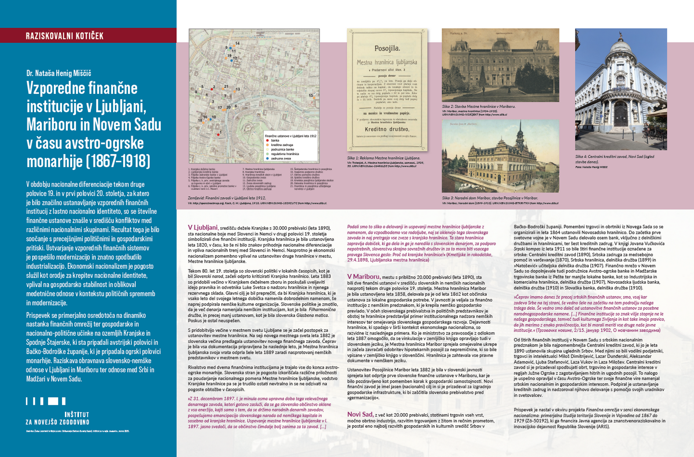

Dr. Nataša Henig Miščič

V Ljubljani, središču dežele Kranjske s 30.000 prebivalci (leta 1890), sta nacionalne boje med Slovenci in Nemci v drugi polovici 19. stoletja simbolizirali dve finančni instituciji. Kranjska hranilnica je bila ustanovljena leta 1820, v času, ko še ni bilo znakov prihodnje nacionalne diferenciacije in vpliva nacionalnih trenj med Slovenci in Nemci. Nasprotno je ekonomski nacionalizem pomembno vplival na ustanovitev druge hranilnice v mestu, Mestne hranilnice ljubljanske.

Tekom 80. let 19. stoletja so slovenski politiki v lokalnih časopisih, kot je bil Slovenski narod, začeli odprto kritizirati Kranjsko hranilnico. Leta 1883 so pridobili večino v Kranjskem deželnem zboru in poskušali uveljaviti idejo pravnika in odvetnika Luke Svetca o nadzoru hranilnice in njenega rezervnega sklada. Glavni cilj je bil preprečiti, da bi Kranjska hranilnica, ki je vsako leto del svojega letnega dobička namenila dobrodelnim namenom, še naprej podpirala nemške kulturne organizacije. Slovenske politike je zmotilo, da je več denarja namenjala nemškim institucijam, kot je bila Filharmonična družba, in precej manj ustanovam, kot je bila slovenska Glasbena matica. Poskus je ostal neuspešen.
S pridobitvijo večine v mestnem svetu Ljubljane se je začel postopek za ustanovitev mestne hranilnice. Na seji novega mestnega sveta leta 1882 je slovenska večina predlagala ustanovitev novega finančnega zavoda. Čeprav je bila vsa dokumentacija pripravljena že naslednje leto, je Mestna hranilnica ljubljanska svoja vrata odprla šele leta 1889 zaradi nasprotovanj nemških predstavnikov v mestnem svetu.
Rivalstvo med dvema finančnima institucijama je trajalo vse do konca avstroogrske monarhije. Slovenska stran je pogosto izkoriščala različne priložnosti za poudarjanje nacionalnega pomena Mestne hranilnice ljubljanske, vodstvo Kranjske hranilnice pa se je trudilo ostati nevtralno in se ne odzivati na pogoste obtožbe v časopisih.
»Z 31. decembrom 1897. l. je minula osma upravna doba tega velevažnega denarnega zavoda, keteri gotovo zasluži, da se ga slovensko občinstvo oklene z vso eneržijo, kajti samo s tem, da se držimo narodnih denarnih zavodov, pospešujemo emancipacijo slovenskega naroda od nemškega kapitala in sosebno od kranjske hranilnice. Uspevanje mestne hranilnice ljubljanske v l. 1897. jasno svedoči, da se občinstvo čimdalje bolj zanima za ta zavod. […] Podali smo to sliko o delovanji in uspevanji mestne hranilnice ljubljanske z namenom, da vzpodbodemo vse rodoljube, naj se oklenejo tega slovenskega zavoda in naj pretrgajo vse zveze s kranjsko hranilnico. Ta stara hranilnica zapravlja dobiček, ki ga dela in ga je naredila s slovenskim denarjem, za podporo nepotrebnih, slovenstvu skrajno sovražnih društev in za to mora biti vsacega pravega Slovenca geslo: Proč od kranjske hranilnice!«(Kmetijske in rokodelske, 29.4.1898, Ljubljanska mestna hranilnica)

V Mariboru, mestu s približno 20.000 prebivalci (leta 1890), sta bili dve finančni ustanovi v središču slovenskih in nemških nacionalnih nasprotij tekom druge polovice 19. stoletja. Mestna hranilnica Maribor je bila ustanovljena leta 1858, delovala pa je od leta 1862 kot občinska ustanova za lokalne gospodarske potrebe. V javnosti je veljala za finančno institucijo z nemškim predznakom, ki je krepila nemško gospodarsko prevlado. V očeh slovenskega prebivalstva in političnih predstavnikov je obstoj te hranilnice predstavljal primer institucionalnega nadzora nemških interesov ter omejevanja slovenskega gospodarskega razvoja. Dejavnosti hranilnice, ki spadajo v širši kontekst ekonomskega nacionalizma, so razvidne iz naslednjega primera. Ko je ministrstvo za pravosodje z odlokom leta 1887 omogočilo, da se vinkulacije v zemljiško knjigo opravljajo tudi v slovenskem jeziku, je Mestna hranilnica Maribor sprejela omejevalne ukrepe in začela zavračati odobritev hipotekarnih posojil za nepremičnine, ki so bile vpisane v zemljiško knjigo v slovenščini. Hranilnica je zahtevala vse pravne dokumente v nemškem jeziku.

Ustanovitev Posojilnice Maribor leta 1882 je bila v slovenski javnosti sprejeta kot odprtje prve slovenske finančne ustanove v Mariboru, kar je bilo pozdravljeno kot pomemben korak k gospodarski samostojnosti. Novi finančni zavod je imel jasen (nacionalni) cilj in si je prizadeval za izgradnjo gospodarske infrastrukture, ki bi zaščitila slovensko prebivalstvo pred »germanizacijo«.
Novi Sad, z več kot 20.000 prebivalci, stotinami trgovin vseh vrst, močno obrtno industrijo, razvitim trgovanjem z žitom in rečnim prometom, je postal eno najbolj razvitih gospodarskih in kulturnih središč Srbov v Bačko-Bodroški županiji. Pomembni trgovci in obrtniki iz Novega Sada so se organizirali in leta 1864 ustanovili Novosadsko hranilnico. Do začetka prve svetovne vojne je v Novem Sadu delovalo osem bank, vključno z delniškimi družbami in hranilnicami, ter šest kreditnih zadrug. V knjigi Jovana Vučkovića Srpski kompas iz leta 1911 so bile štiri finančne institucije označene za srbske: Centralni kreditni zavod (1890), Srbska zadruga za medsebojno pomoč in varčevanje (1870), Srbska hranilnica, delniška družba (1899) in »Natošević« učiteljska delniška družba (1907). Finančno mrežo v Novem Sadu so dopolnjevale tudi podružnice Avstro-ogrske banke in Madžarske trgovinske banke iz Pešte ter manjše lokalne banke, kot so Industrijska in komercialna hranilnica, delniška družba (1907), Novosadska ljudska banka, delniška družba (1910) in Slovaška banka, delniška družba (1910).
»Čeprav imamo danes že precej srbskih finančnih ustanov, smo, vsaj kar zadeva Srbe na tej strani, še vedno šele na začetku na tem področju našega trdega dela. Še vedno smo daleč od ustanovitve finančnih ustanov za posebne narodnogospodarske namene. […] Finančne institucije so znak višje stopnje ne le našega gospodarskega, temveč tudi kulturnega življenja in kot take imajo pravico, da jih merimo z enako pravičnostjo, kot bi morali meriti vse druge naše javne institucije.«(Трговачке новине, 2/15. јануар 1902, О новчаним заводима)
Od štirih finančnih institucij v Novem Sadu s srbskim nacionalnim predznakom je bila najpomembnejša Centralni kreditni zavod, ki jo je leta 1890 ustanovila skupina uglednih Srbov. Med njimi so bili vodilni podjetniki, trgovci in intelektualci Miloš Dimitrijević, Lazar Dunđerski, Aleksandar Adamović, Ljuba Stefanović, Laza Vukov in Laza Milošev. Centralni kreditni zavod si je prizadeval spodbujati obrt, trgovino in gospodarske interese v regijah Južne Ogrske z zagotavljanjem hitrih in ugodnih posojil. To nalogo je uspešno opravljal v času Avstro-Ogrske ter svoje finančne vire namenjal srbskim nacionalnim in gospodarskim interesom. Podpiral je ustanavljanje kreditnih zadrug in nadzoroval njihovo delovanje s pomočjo svojih uradnikov in svetovalcev.

Prispevek je nastal v okviru projekta Finančna omrežja v senci ekonomskega nacionalizma: primerjalna študija teritorija Slovenije in Vojvodine od 1867 do 1929 (Z6-50192), ki ga financira Javna agencija za znanstvenoraziskovalno in inovacijsko dejavnost Republike Slovenije (ARIS).
***
